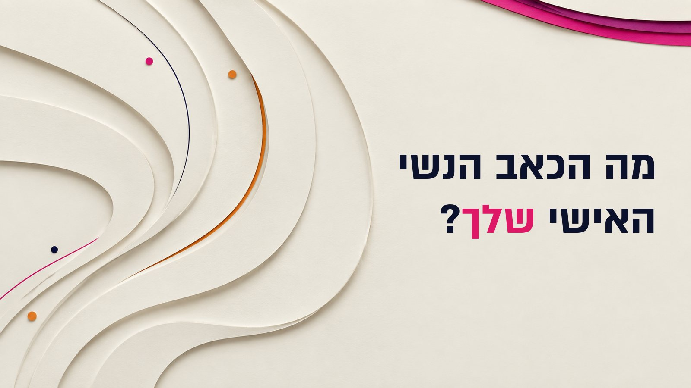
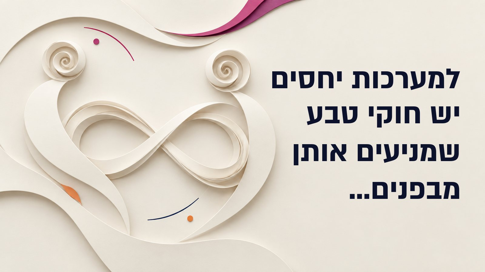
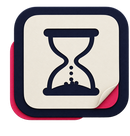
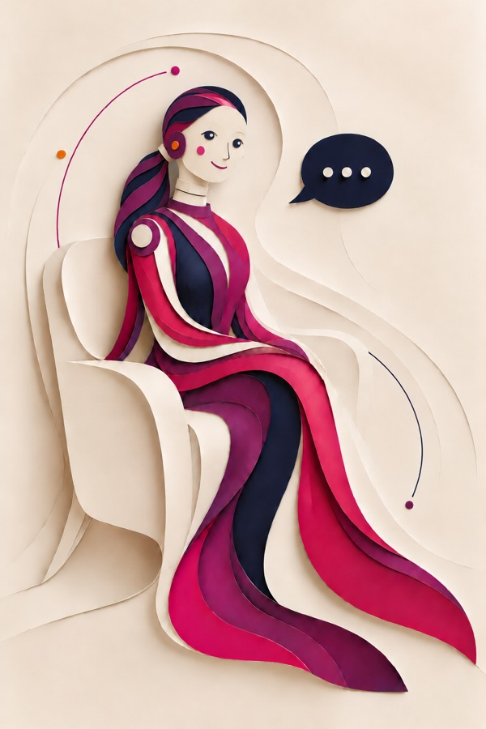
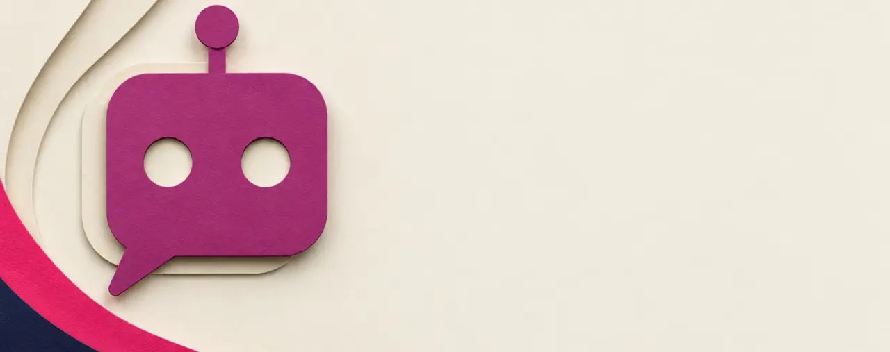
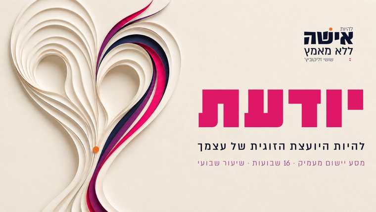
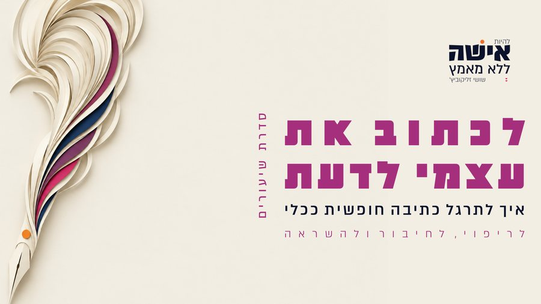
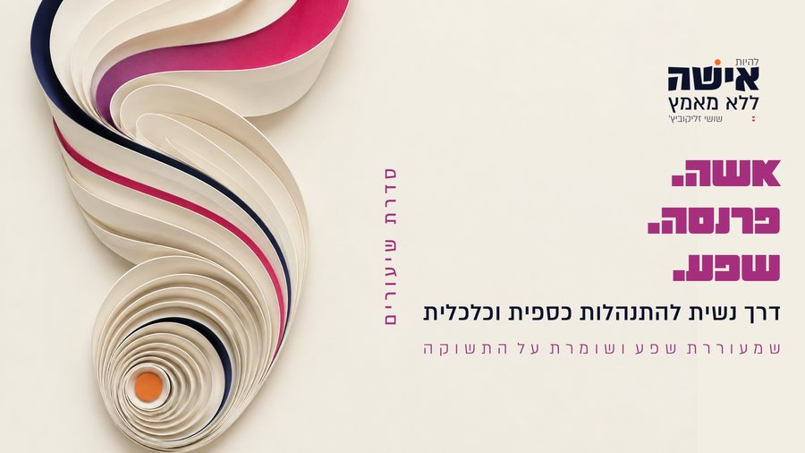
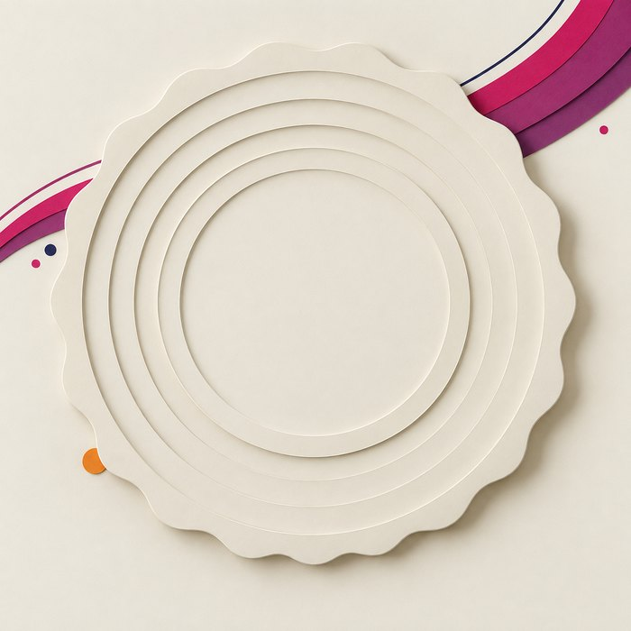

אם את רוצה רגע לנשום איתי, להבין מה עובר עלייך, ולראות אם הדרך הזו מדויקת לך -
תמשיכי איתי עוד קצת.

מה הכאב הנשי האישי שלך?
נכון שלפעמים זו חוויה זוגית שכואבת ממש,
ריחוק, כעס, מריבות שחוזרות, ערבים שלמים של שתיקה.
אבל לפעמים זה לא נראה בדיוק כך.
זה בית שמתפקד יפה, ילדים, שגרה, והרבה מאוד הכרת הטוב. אין דרמה, אין צעקות,
ואם מישהי תשאל אותך איך הזוגיות, את תעני "ברוך השם, בסך הכל טוב".
ובכל זאת יש בך משהו שלא נח, שכאוב, שמתוח, שעצוב.
יש הרבה סוגים של כאב נשי בזוגיות.
אין אחד שהוא הנכון, ואין אחד שהוא מספיק גדול כדי להיחשב.
הנה כמה שאני חווה הכי הרבה עם הנשים שפוגשת,
תראי אם משהו מהם מצלצל לך מוכר.
אולי הכל בסדר, ובכל זאת חסר לך עומק
יש בית, יש שגרה, יש המון מה להעריך.
ועמוק בפנים את יודעת שזוגיות יכולה להיות הרבה יותר מתפקוד, אחריות ושגרה.
את רוצה חיבור.
את רוצה חיות.
את רוצה להרגיש שאת לא רק מסתדרת בתוך הקשר, אלא חיה בו.
אולי את אשה שמצליחה בחוץ, ומרגישה שטוחה בבית
בחוץ את חכמה, מוערכת, אהובה.
יודעת לעשות, יודעת להוביל, יודעת להצליח.
ודווקא במקום הכי קרוב את מתפקדת כמו ׳שטוח׳, מנומס ובינוני.
ולאט לאט את מוצאת את עצמך מעדיפה להשקיע את הזמן שלך במקומות שמספקים אותך יותר.
וזה כואב, כי זה מרגיש לא מדויק.
אולי הזוגיות שורפת לך את הכוחות
במקום שהזוגיות תהיה מקור האנרגיה שלך, היא זוללת לך אותה. את יוצאת מהבית מתוחה מהויכוחים, מרגישה שצריכה להתנצל על ההצלחות שלך, חסרת ביטחון, עם גוף שלא נרגע. וזה נכנס לעבודה, לילדים, למצב הרוח, לפרנסה, לכל מקום שאת אמורה להצליח בו.
ואולי את ביחד, ומרגישה לבד
אין נושאי שיחה משותפים כמו שחלמת שיהיו.
יש נושאים שאת כבר לא מעלה. את קצת מיואשת מלנסות להסביר לו את עומק חוויות החיים שלך, את הצרכים העמוקים שלך וזה גורם לך להסתגר, להתרחק...
את לא מזמינה אורחים ולא מתארחת איתו ביחד, כי רואים מיד שאין ביניכם חיבור.
ואת מתביישת בזה.
עכשיו,
אולי את מוצאת את עצמך בכמה מהם? ואולי אף אחד מהם הוא לא בדיוק שלך? ואולי החוויה שלך היא משהו שאין לו עדיין שם, ושמעולם לא אמרת אותו בקול.
זה בסדר גמור.
לכל אשה יש את הכאב שלה,
והוא לא צריך להיראות כמו של אף אחת אחרת.
אבל שימי לב לדבר אחד, כי הוא כל הסיפור: הכאב הזה, איך שהוא לא נראה אצלך, תמיד מצביע בדיוק על אותו מקום:
על פער בין מה שאת רוצה לבין מה שיש.
בכל פעם שיש פער בין החלומות שלך למציאות -
זה כאב מטורף.
ולא משנה מה הפער, ולא משנה מה גודל הפער.
כי לא מודדים חוסר בכמויות. חוסר זו חוויה.
אז אני רוצה להרשות לך שני דברים, כאן, לפני הכל.
1 אני מרשה לך להתלונן בתוכך.
כן, מותר שיכאב לך על כל דבר שחסר לך בקשר.
גם אם הוא נראה קטן, וקטנוני, ואפסי לעומת כל מה שיש לך.
2אני מרשה לך לרצות בקול.
גם את הדברים שכבר הפסקת להעז לרצות. גם את אלה שמעולם לא אמרת לאף אחת.
ואת לא צריכה שהזוגיות שלך תהיה במשבר כדי לרצות לחיות אותה אחרת.
את רואה סביבך זוגות שנראים כמו זוג פרפרים.
את לא רוצה לקנא, את באמת לא אשה כזו.
אבל משהו בלב שלך נשרף כשאת מסתכלת.
כי נדמה לך שזה רק אצלכם... זו בדיוק הנקודה. אף אחת לא מדברת על זה.
עכשיו, חשוב לי שתביני -
כאב בזוגיות? זה ממש לא סימן שמשהו אצלך מקולקל!
בכל זוגיות, גם בטובה שבהן, נפתחים פערים.
זה טבעי, וזה קורה לכולן.
אבל מה משמעותי, ומה אנחנו רוצות לשנות?
את היכולת שלך לטפל בפערים, ו -
גם - לרפא את מה שאת חווה מולם,
וגם - לצמצם אותם ולהשפיע על המצב.
ואם עד היום את לא מרגישה שאת מצליחה לעשות את זה -
זה לא בגלל שאת דפוקה,
ולא בגלל שנפלת על האיש הלא מדויק לך.
זה רק כי אף אחד לא לימד אותך מה זו השפעה,
ואיך משנים מציאות בשקט.
ובגלל זה, שם בדיוק שוב ושוב מתעורר המאמץהנשיהכואב שלך:
את מנסה לדבר. להסביר. לדייק.
את חושבת איך להיות טובה יותר. רגועה יותר. מכילה יותר. נכונה יותר.
את בודקת את מצב הרוח שלו לפני שאת פותחת את הפה.
את מוותרת כדי לא לריב.
את מנהלת את הערב כדי שייצא טוב..... כמה מאמץ!
ואם זה לא עובד, את מסיקה שצריך להתאמץיותר.
זו ממש לא אשמתך. ככה לימדו אותנו.
לנהל. לדחוף. להוכיח. להחזיק. להתחרות. לקחת אחריות.
גם אני הייתי שם.
חשבתי שזה יעבוד.
אבל זה לא.
ולכל המאמץ הזה - יש מחיר, ואת משלמת אותו כל יום, בבית:
גם - את לא אוהבת את מי שיוצאת ממך שם. בחוץ - את לפעמים אשה אחרת, מביאה את כל הטוב שיש בך.
ובבית - לפעמים את כבר לא מזהה את עצמך, מרגישה קצת גבר, מרגישה כמו אמא למתבגר, מרגישה כל כך לא שווה ולא ראויה אולי....
וגם - הקשר בינכם מתרחק מהחלום שלך. זו לא המשיכה שהיתה פעם.
לא החיבור.
ולא הזוגיות שהיית בטוחה שתפגשי.
למה? כי כל המאמץ הזה - תמיד יושב על פחד. ופחד הוא לא ממגנט. הוא דוחה.
ולכן מאמץ ומשיכה? לא יכולים לגור באותו חדר.
גיליתי שקברתי המון ממי שאני באמת.
שוויתרתי על המון דברים שחשובים לי בחיים כדי לרצות את בעלי.
שהייתי מנוהלת מפחד.
ושאני יכולה אחרת.
בוגרת הקורס יודעת
למדתי שאני לא חייבת לרצות כדי להיות אהובה.
שאני שווה וראויה בפני עצמי, בלי תלות בתגובות של אף אחד.
וזה שינה לי את כל הדרך.
בוגרת הקורס יודעת

למערכות יחסים יש חוקי טבע שמניעים אותן מבפנים
יש חוקים. פשוט לא לימדו אותך אותם
חוקי מערכות היחסים הם כמו חוקי הטבע.
במבט ראשון הם נראים מוזרים למי שלא למד אותם,
שונים מכל מה שהתרגלת לחשוב, ולפעמים אפילו לא הוגנים.
אבל כשמבינים אותם לעומק מגלים שהם דווקא מדויקים, ישרים ומוסריים. והכי משמעותי שהם תמיד עובדים:
הם קובעים למה אותה בקשה בדיוק, באותן מילים, פעם פותחת לו את הלב ופעם סוגרת אותו.
הם קובעים למה ככל שאת רודפת אחרי חיבור, כך הוא מתרחק.
הם קובעים מה מכבה משיכה ומה מדליק אותה, בלי שאף אחד מכם אמר מילה.
האם את מכירה את חוקי הטבע של מערכות היחסים?
יש סיכוי גדול שהראש שלך מלא בידע על זוגיות שפשוט לא עובד.
מה ׳נכון׳ להגיד.
איך ׳צריך׳ לתקשר.
מה ה׳חובות׳ שלך.
איך להיות אשה ׳טובה׳.
אבל למה רוב הידע הזה לא מזיז כלום ולא משנה את המצב בינכם ובלב שלך? כי הוא לא עוסק בחוקים הפנימיים האמיתיים,
אלו שמניעים באמת את מערכות ההפעלה של הקשר.
כי בין אשה לאיש יש מערכת הפעלה פנימית.
עולם מלא ומרתק שקיים מאחורי הקלעים של הקשר שלכם שכל אשה שרוצה להיות מאושרת - צריכה להכיר :)
ובדיוק בשביל זה יצרתי לך את התהליך - ׳אשה ללא מאמץ׳ שם אנחנו לומדות ביחד את חוקי המשיכה הפנימיים, הנסתרים, אחד אחד,
וכל חוק פותח לך עולמות חדשים של הבנה, חיבור והשפעה מרגשת!
החוקים האלה שמחכים שתכירי אותם - יפתיעו אותך.
הם יראו לך על מה בדיוק את עובדת קשה לשווא.
הם יסבירו לך למה דווקא הדברים שנראים לך קטנים הם אלה שמזיזים את הכל. והם יגלו לך איפה בדיוק נמצא כוח ההשפעה שלך ואיך להפעיל אותו ללא מאמץ.
מאמנת מנטלית, מטפלת בפסיכותרפיה הוליסטית, מייסדת שיטת אשה ללא מאמץ
ומייסדת בית הספר שלם להכשרת מאמנות מנטליות לשינוי ריפוי והשפעה ובמערכות יחסים.
חמש עשרה שנה אני עושה דבר אחד:
מלמדת נשים איך ליצור בעצמן את השינויים שהן חולמות להשיג, לחוות ריפוי ולגלות את כח ההשפעה שלהן על עצמן ועל מערכות היחסים שלהן - בזוגיות, בהורות, בכל מקום ובתוך עצמן.
אני גם מרצה, ומובילה את הפודקאסט אשה ללא מאמץ.
הדרך הזו שזכיתי לפתח, תודה להשם, נולדה מתוך חיבור עמוק בין עולם האמונה, הנפש, הנשיות, מערכות היחסים וההשפעה המנטלית.
יצרתי את הקורסים של אשה ללא מאמץ - כדי שכל אשה תוכל ללמוד את הדרך הזו בצורה נגישה, פשוטה, עמוקה ומעשית.
לא כעוד ידע על זוגיות, אלא כדרך חיים שמחזירה לה את עצמה ואת כוח ההשפעה הנשי המדהים שתמיד היה בה ומחכה לצאת לאור.
ואם שאלת את עצמך - הדרך הזו של אשה ללא מאמץ לא מלמדת נשים להתאמץ יותר, לרצות אחרים עוד יותר, להסביר יותר או להילחם על מקומן.
להפך.
היא מלמדת אותן:
לחזור פנימה
לרפא לחץ ותלות
להתחבר לערך העצמי
לפגוש כאב בשלווה ושקט
ולהיות אשה שיש לה נוכחות פנימית ממגנטת כנה, יציבה, מחוברת לבורא, ללב שלה ולכוח ההשפעה הטבעי שלה
הזוגיות שלך מתחילה להיראות אחרת. וגם הבית, וגם החיים. אבל זה לא בגלל שלמדת לדחוף דברים בעוד מאמץ או כי נהיית חזקה יותר לבד. אלא כי את לומדת מה להביא אחרת לקשר, איך להזיז את המאמץ ואיך לחשוף את כוח המשיכה הנשי המדהים שלך.
וברגע שאת עושה את זה - משתנה גם מה שחוזר אלייך.
כי את ממגנטת.
אז, חוקי המשיכה הם קודם כל מתנה מדהימה בשבילך
כי כשאת מתחילה לגלות את חוקי המשיכה ומתאמנת איתם להיות אשה ללא מאמץ -
את כבר לא אותה אשה, את מתפקדת אחרת מבפנים
את נשארת שלמה ורגועה יותר גם כשכואב
הכאב עדיין מקבל מקום, אבל את חוזרת לעצמך מהר. הוא כבר לא זורק אותך לבהלה ולא מחזיר אותך אוטומטית למאבק.
את מרגישה שווה ומלאת ערך בלי קשר למה שאת מקבלת
מחמאה, מבט, תשובה או מתנה הם מתנה נעימה, ולא המדד לכמה את שווה, אהובה או נבחרת. וזה שקט שלא הכרת.
את יודעת להחזיק רצון בשלווה בלי להפוך את הרצון לדרישה
את לא מוחקת את הרצונות שלך.
את לומדת לבטא אותם ממקום נקי, חי ושלם.
בלי לחץ ובלי מלחמה.
את חוזרת להיות אשה מלאת חיים
את פחות עסוקה בלהחזיק, לתקן ולשרוד. ויותר פוגשת את הלב, הנשיות, הרצון, השמחה והאור שלך.
כל הזוגיות שלי השתנתה ברגע שהחלטתי לקחת פיקוד על החיים שלי ולא על שלו. אני חיה את החיים. מרגישה אהובה, מרגישה חיבור אמיתי בינינו.
בוגרת הקורס יודעת
שמה לב שיש בי יותר רוגע, וזה משפיע על עוד מערכות יחסים. ויש שינוי גם בסביבה שאני תוהה לעצמי איך הוא קרה. הרי עדיין לא עשיתי כלום.
בוגרת הקורס ממגנטת
ואז, כשאת מעירה את הנשיות הממגנטת שלך - המציאות בינכם משתנה, הוא והסביבה מגיבים וזה מרגש!
דברים שניסית לגרום להם לקרות במאמץ מתחילים להגיע מעצמם
מה שפעם דרש הסבר, בקשה חוזרת ושכנוע, פתאום קורה בלי שביקשת. זה הסימן הראשון שהחוקים עובדים.
היחס אלייך משתנה
יותר הקשבה, יותר תשומת לב, יותר כבוד. לא כי דרשת אותם, אלא כי עמדת הנפש שלך מולו השתנתה.
הוא נפתח, מתפתח, יוזם ומשתנה כלפייך ובכלל
מחוות קטנות שלא ביקשת.
רצון להיות איתך.
ולפעמים דווקא הדבר שהתייאשת מלבקש.
כל אוירת שיתוף הפעולה בבית עולה
פחות ויכוחים על מי צודק, ויותר החלטות שנלקחות ביחד. גם מולו, וגם מול הילדים. יותר רצון טוב, יותר מוטיבציה, רצון שבא בפנים...
האווירה בבית מתרככת ונעימה
הבית מפסיק להיות מקום שצריך לנהל.
הערב נגמר אחרת, והבוקר מתחיל אחרת.
וזה מדבק החוצה - דברים עובדים יותר
אותה עמדת נפש עובדת גם בעבודה, מול המשפחה המורחבת ומול חברות. כי חוקי המשיכה הם חוקים של קשר, לא של זוגיות בלבד, ואת שמה לב איך יחד עם הנינוחות ושלמות הלב שנפתחת לך - את מקבלת בחזרה משהו אחר וטוב מהסביבה.
זה לא קורס של "תראי שיעורים ותסמני וי".
זה מסע תהליכי.
כל יום בונה את היום שאחריו.
כל שיעור פותח עוד שכבה.
וכל משימה מחברת אותך לסיטואציות האמיתיות שלך בבית ובחיים.
ובסוף ארבעת השבועות את בע״ה יוצאת אשה אחרת: רגועה יותר, חיה יותר. ממגנטת.
מה יש בארבעת השבועות של ממגנטת תלחצי על התיבות כדי לראות את הסילבוס בהרחבה:)
שבוע 1 · לחזור לעצמך: להפסיק להוכיח שאת ראויה לאהבהאת מרגישה ראויה לאהבה בלי להוכיח כלום, וזה הדבר הראשון שהוא קולט אצלך.
בשבוע הזה את מפרקת את אחד השורשים הכי עמוקים של המאמץ: האמונה שאם רק תהיי מספיק טובה, מספיק נעימה, מספיק מתפקדת ומספיק נכונה - אז תקבלי את האהבה שאת רוצה. את מתחילה לזהות איפה הלב שלך עובד קשה מדי, ואיפה את חיה מתוך פחד לאבד אהבה.
מה שנלמד ביחד במהלך השבוע הזהמה הסיפור הזוגי שלך באמת? · למה אהבה מרגישה לפעמים כמו פרויקט מתיש? · למה רדיפה אחרי אהבה לא באמת מביאה אהבה? · מה בך כבר ממגנט, גם לפני שתשתני? · איך קבלה עצמית משנה את מה שאת מושכת מהעולם? · איך למלא אנרגיה בלי לחכות שמישהו אחר ימלא אותך?
שבוע 2 · רגעי החוסר: מה לעשות כשהוא לא נותן לך את מה שאת צריכה ממנואת פוגשת את הרגע שהכי מטלטל אותך ונשארת בשקט שלך, ומשם נפתחת משיכה חדשה.
לא תיאוריה ולא רעיונות יפים, אלא בדיוק המקומות שבהם רוב הנשים נופלות. את בוחרת רצון אחד שלא מתממש בזוגיות, ולומדת מה קורה לך כשאת לא מקבלת אותו: המתח שעולה, הפחד שמנהל, והמחיר שזה גובה מהלב שלך ומהקשר. ואז את לומדת מה לעשות אחרת.
מה שנלמד ביחד במהלך השבוע הזהלבחור את רגע החוסר שבו את רוצה להתחיל שינוי · למה ההתעסקות בו גוזלת ממך את כוח ההשפעה שלך? · למה לא מספיק לשנות התנהגות חיצונית? · איך מתח פנימי משפיע על המשיכה והקרבה ביניכם? · תכנית פעולה לרגע שבו החוסר מטלטל אותך · למה את לא צריכה לפחד מחוסר?
שבוע 3 · ביטוי עצמי ממגנט: איך לומר את מה שחשוב לך בלי להילחם על תוצאהאת אומרת את האמת שלך, ורואה איך הלב שלו נפתח בדיוק שם.
אשה ללא מאמץ לא שותקת.
היא לא מוחקת את עצמה, ולא מעמידה פנים שלא כואב לה.
היא פשוט לומדת לבטא את עצמה אחרת: לא מתוך פחד, ולא מתוך דרישה סמויה שעכשיו הוא ימלא אותה.
כאן את מגלה שעצם הביטוי הוא בעצמו מילוי.
מה שנלמד ביחד במהלך השבוע הזהלמה להתמקד בעצמך זו נתינה עמוקה לבית · מה באמת היית רוצה שהוא ידע ממך? · מה קורה כשאת שותקת מפחד לאבד אהבה? · מה קורה כשאת מדברת כדי להשיג ממנו תגובה? · איך נשמע ביטוי של אשה שלמה?
שבוע 4 · רצון, חיות וקבלה: לחיות כאשה שמסכימה להיות כלי למילויאת רוצה בקול, והרצון שלך מושך אלייך מילוי - וזו הרגשה משכרת.
הרבה נשים מפחדות לרצות. כי רצון שלא מתממש כואב, וכי אולי זה הופך אותן לתובעניות. כאן את מגלה שרצון נשי נקי הוא לא לקיחה - הוא חיות, הוא נתינה, והוא הכלי שפותח שפע, אהבה וקרבה.
מה שנלמד ביחד במהלך השבוע הזהמה את באמת רוצה? · למה לבטא רצון זו נתינה נשית עמוקה? · איך לבקש בלי להפוך את הבקשה למאבק? · האומץ לאתגר אותו · חיים מלאים מעבר לזוגיות · לחיות כאשה ללא מאמץ
מה בדיוק את מקבלת בממגנטת
23 שיעורי וידאו
מבוא שנפתח מיד עם ההרשמה, ואחריו שיעור לכל יום.
קצר, ברור וממוקד.
לא הרצאות של שעה.
משימת תרגול לכל שיעור
לא שיעורי בית. שאלה אחת חזקה, או תרגיל התבוננות קטן, שלוקח את השיעור מהראש ומכניס אותו לחיים שלך.
23 כרטיסי חוקי המשיכה
חוק אחד בכל פעם, מעוצב, לשמירה ולהדפסה.
במקום שאת רואה כל יום.
דפי עבודה מסודרים
לכתיבה, להתבוננות ולתרגול.
אפשר להדפיס.
וידאו, אודיו והורדה
לצפות, להאזין בנסיעה, או להוריד ולשמור אצלך.
מאתר הקורסים וגם מהדרייב.
המאמנת האישית שלך
מאמנת דיגיטלית שמכירה את כל הקורס, זמינה לך בכל שעה. עוד על זה בהמשך.
שנה שלמה באתר
הגישה שלך פתוחה לשנה. ובדרייב את יכולה להוריד את כל השיעורים ולשמור אותם אצלך לתמיד, בלי תאריך תפוגה.

בקצב שלך
אין שידורים חיים שצריך להספיק, ואין מה לפספס. את נכנסת מתי שנוח לך, ואפשר לחזור לשיעור בכל שלב בחיים.
וכמה זמן זה לוקח לך ביום?
בין עשר דקות לארבעים דקות, תלוי בשיעור ובכמה את בוחרת להעמיק בתרגול.
ואם פספסת יום - הוא מחכה לך. באמת.
מדהים כמה את גאונית, והפשטות שבה את מציגה את הדברים כל כך ממגנטת. אני בולעת בשקיקה את החומר ומיישמת אותו.
בוגרת הקורס ממגנטת
הבעתי את רצוני שביום שישי הוא יארגן את המטבח והסלון ואני אלך לנוח. הלכתי בלי לדעת למה אקום - וקמתי לסלון ומטבח מבריקים. ולא רק זה, גם לבעל מרוצה ו״עף על עצמו״.
בוגרת הקורס ממגנטת
השלב השני
ואחרי ארבעה שבועות?
ארבעה שבועות זה מספיק כדי שתדעי את החוקים, ושתרגישי את השינוי הראשון.
אבל אני רוצה להיות איתך כנה לגמרי.
להעיר את כוח המשיכה שבך זה לא אותו דבר כמו לחיות אותו.
בארבעה שבועות את מטמיעה את חוקי המשיכה בתוכך.
ואז החיים ממשיכים.מגיע ערב אחד קשה. מגיעה תקופה לחוצה.מגיע רגע שבו הוא עושה בדיוק את הדבר שהכי כואב לך.
ושם - את רוצה לדעת מה לעשות עם זה ברגע עצמו.
כאן נכנס החלקהשני.
והוא חלק אחר לגמרי.
הוא מטמיע את החוקים בתוך החיים שביניכם. שבוע אחרי שבוע, במשך ארבעה חודשים.
בסופו קורה הדבר שבשבילו כל זה נבנה.
בפעם הבאה שמשהו ישתבש, כששוב תפגשי פער מכווץ: את כבר לא תצטרכי לשאול אף אחד מה לעשות.
לא אותי. לא חברה. ולא יועץ.
את תהיי יותר ויותר היועצת הזוגית של עצמך.
אז הנה החלק השני במסע הנשי שלך:
כאן הקצב משתנה לגמרי.
שבוע שלם לכל שיעור, כדי שלשינוי יהיה מספיק זמן להיכנס פנימה ולהישאר.
ששה עשר השבועות של יודעת תלחצי על התיבות כדי לראות את הסילבוס בהרחבה:)
שבוע 1 · איך לחיות עכשיו כמו האשה העתידית שאתאת מתעוררת בבוקר לתוך האשה שרצית להיות, לא לתוך רשימת המשימות.
מציירות תמונת מציאות מדויקת - מי את כשאת בטובה שלך. עובדים על לנהל את האנרגיה שלך ולהתמקד בה, וזה מה שמזיז את האנרגיה שלו תוך שניות. ותרגול יומי קצר שמחזיק את זה גם בשבוע עמוס.
שבוע 2 · מחסרה לשלמההרוגע שחיכית שהוא ייתן לך - מגיע ממך, ואז פתאום מגיע גם ממנו.
אימון מודעות "סוף יום" שלוקח שבע דקות. דף תרגול לרגעי אמת, לשימוש בזמן אמת ולא אחר כך. ומה שנפתח בבית כשאת לא ממתינה לאישור שלו כדי להיות בשמחה.
שבוע 3 · לחיות חיים של עונגרגע שהיה מפיל אותך הופך לרגע של עונג, ואת מרגישה את זה בגוף.
איך נגמרת ההתמכרות למילוי חוסר מבחוץ.
הפיכת רגע של חוסר לחוויית עונג - שיטה, לא הלך רוח.
וחוסן שנשאר איתך גם כשמשהו נלקח.
שיעור הטמעהשבוע 4 · הטמעה: ריפוי בהלת החוסרבמקום הבהלה שקמה בך כשהוא מתרחק - יש ביטחון שקט שהקשר מחזיק.
שני שיעורי הטמעה על כל מה שנפתח בשלושת השבועות הראשונים. עובדים על קבלה עצמית וראויות - להרגיש שווה בלי להוכיח. והשקט הזה מדבק, הוא נרגע יחד איתך.
שבוע 5 · מיומנות הקסם הנשיתאת מזיזה מצב שלם בלי לומר עליו מילה, ונהנית מזה.
מיומנות הקסם: להשפיע על האנרגיה בחדר לפני שנפתח דיון. משחק האחריות - איפה הכוח שלך מתחיל, ואיפה את משוחררת. ותרגול לרגעים שבהם את מאבדת שליטה, כי הם יבואו.
שבוע 6 · אשה בביטוי עצמי מקסימליאת אומרת את מה שיש לך לומר, והוא מתקרב - וזו התחושה הכי טובה שיש.
נפרדות והתקרבות: למה דווקא כשאת שלמה עם עצמך הוא רוצה אותך יותר. הרשות לבטא רצון, גבול, ציפייה וכאב - ארבעה דברים שרוב הנשים מחזיקות בפנים. ואיך אומרים אותם כך שהאוויר בחדר מתרכך ולא מתקשה.
שבוע 7 · אשה עם רצונותהרצון שלך נשמע כמו הזמנה, והוא רוצה להיות זה שנותן.
הרצון כאוצר - מה נפתח בך כשאת מפסיקה להתנצל עליו. ביטוי רצון ממגנט: אותה בקשה בדיוק, בניסוח שמעורר בו רצון. ואיך מבקשים שוב אחרי "לא", בלי להיסגר ובלי להתחנן.
שבוע 8 · על גבולות בזוגיות שלךאת מציבה גבול בלי פחד, ומגלה שהקרבה גדלה בדיוק שם.
למה גבול מרגיש מסוכן, ומה קורה ברגע שהוא נאמר בלי איום. איך מציבים אותו כך שהוא לא נשמע כמו סירוב אלא כמו עצמיות. ומה זה מעיר בו - דווקא כאן נפתח אצלו הרצון לשמור עלייך.
שבוע 9 · אשה שיוצרת מציאותאת מצפה לטוב, והוא מתחיל להגיע - זו ההרגשה הכי משכרת בתהליך.
הציפייה כמנוע: למה מה שאת מחזיקה בפנים קובע מה יקרה בחוץ. איך מחזיקים ציפייה לטוב גם כשהמציאות עוד לא השתנתה. והרגע שבו את מזהה שמשהו קרה בגללך, בלי שעשית כלום.
שיעור הטמעהשבוע 10 · הטמעה: ביטוי עצמי נשי בזוגיותלא הספקת ליישם הכל? זה בדיוק השבוע שנועד לך.
מפת הביטוי העצמי - כל מה שנפתח בשבועות 6 עד 9, במקום אחד.
מתי לבטא רצון, מתי גבול, מתי ציפייה ומתי כאב.
זה לא אותו דבר.
ומה קורה בבית כשאת כבר לא מתלבטת.
שבוע 11 · איך להפוך רגעי כאב לרגעים שיוצרים קרבהאת משתפת אותו בכאב, והוא מתקרב - במקום להתגונן או להיעלם.
ההבדל בין להאשים לבין לבטא.
שתי גרסאות של אותו משפט בדיוק.
הרגע שבלעת ולא אמרת - כאן את לומדת מה לעשות איתו במקום זה.
ואיך הרצון לפייס עולה ממנו, מעצמו, בלי שביקשת.
שבוע 12 · הקשבה רומנטיתהוא לא מדבר, או שאף אחת עוד לא באמת שמעה אותו.
הקשבה למסר הלב: מה נמצא מתחת למשפט שהרגיז אותך. למה דווקא המשפטים הצורמים הם אלה שמחביאים את הרצון בך. ומה נפתח אצלו כשהוא מרגיש מובן פעם אחת באמת.
שבוע 13 · על קבלה שמעוררת שפעאת מקבלת בחן, והוא רוצה לתת לך עוד - וזה עונג צרוף.
למה כל כך קשה לקבל, ומה נחסם בקשר כשלא מקבלים. "מברשת הקסם" - כלי קצר שהופך נתינה קטנה שלו לרצון לתת עוד. והשמחה שנכנסת לבית כשהוא מרגיש שהנתינה שלו נראית.
שבוע 14 · סביבת השראה נשית מנצחתאת מוקפת בנשים שמחזיקות אותך, ולא צריכה להסביר לאף אחת.
הפתרון לבדידות בזוגיות - בדידות שקיימת גם בקשר טוב, וכמעט אף אחת לא מדברת עליה. מה באמת עוזר, ומה רק מחזיר אותך לתלונה. ואיך בונים סביבה שממשיכה להחזיק אותך גם אחרי שהמסע נגמר.
שבוע 15 · להיות היועצת הזוגית של עצמךכל רגע מהחיים - את מפרקת אותו לבד ויודעת מה לעשות איתו.
שלושה שלבים לדייק רגע אמיתי מהחיים שלך, בלי לשאול אף אחת. הדגמה חיה על רגעים של נשים מהמסע - את רואה את זה קורה מול העיניים. וזה הרגע שכבר לא צריך אותי, כי את שומעת את עצמך.
שבוע 16 · איזה זיווג מושלם!את מסתכלת אחורה ולא מזהה את האשה שהתחילה - וזה מרגש.
זוגיות רוחנית: מה הקשר הזה בא ללמד דווקא את שניכם. משימת סיום שמסמנת בכתב מה השתנה, בשבילך. ומשפט אחד שמסכם: החיבור, השמחה והביטחון שלא היו שם בהתחלה.
כדי שיהיה לך נח ללמוד - כל שיעור בנוי מפרקים נפרדים - פרק א׳, פרק ב׳, וכן הלאה. לפעמים שניים, לפעמים חמישה, לפי השיעור.
כשעה וחצי עד שעתיים לשיעור
ויש לך שבוע שלם. את מחלקת אותו איך שנוח לך - פרק ביום, שניים בערב אחד, או הכל ברצף.
דפי סיכום לכל שיעור
מסודרים ומעוצבים, להדפסה.
כדי שתוכלי לצאת עם הרעיונות מהמסך אל היום שלך.
גם באודיו
לכל פרק יש גם קובץ שמע, להאזנה בנסיעה, בהליכה או תוך כדי עבודות הבית.
המאמנת האישית שלך
מלווה אותך גם כאן, בזמן אמת, בדיוק כשעולה סיטואציה שאת לא בטוחה מה לעשות איתה.
גישה לדרייב והורדה
אפשר להוריד את כל השיעורים ודפי הסיכום ולשמור אותם אצלך לתמיד, בלי תאריך תפוגה.
שנה שלמה באתר
הגישה שלך פתוחה לשנה, ואפשר לחזור לשיעור בכל שלב בחיים.
בקצב שלך
אין שידורים חיים שצריך להספיק, ואין מה לפספס. פשוט לומדת בקצב שלך.

בואי נדבר שניה על חווית הלימוד החדשנית שיצרנו לך,
עם
המאמנת האישית הדיגיטלית שלך
24/7
זמינה לך בכל שעה ומקום
בשלב שלך
יודעת איפה את בלימוד הקורס
בשפה שלנו
מאומנת לדבר את הדרך שלנו
אשה ללא מאמץ היא לא רק קורס. זו מיומנות נרכשת. ומיומנות לומדים בתוך החיים, לא בתוך שיעור.
ובדיוק בשביל זה נוצרה המאמנת האישית שלך - מאמנת דיגיטלית שנבנתה במיוחד לפי שפת הקורס, שלבי התהליך, המשימות וחוקי המשיכה.
היא מלווה אותך לאורך כל התהליך, וגם תקופה אחריו, כדי שתוכלי להיכנס אליה בזמן אמת. זמינה לך לכל שיתוף ושאלה בדיוק כשעולה סיטואציה, מתח, ריצוי, ניהול, כאב או בלבול. ולהתייעץ.
והכי חשוב - היא מאמנת, לא יועצת:) היא לא רק זורקת תשובה ושולחת אותך להתמודד, היא מאמנת אותך: שואלת אותך שאלות מדויקות, מחזירה אותך לשלב שבו את נמצאת בקורס,
ועוזרת לך להבין מה קורה בתוכך.
מענה אישי בכל שעה, גם באחת בלילה
היא יודעת באיזה שלב את נמצאת בקורס
מאומנת לשוחח איתך ולעזור לך בשפה של הקורס ובשפה של שושי
הדרך לחוות ידע ותרגול בזמן אמת בתוך סיטואציות מהחיים
את בוחרת אם השיחה נשמרת אצלי או דיסקרטית לגמרי
ואיך נכנסים אליה?
בלחיצה על קישור אחד שמחכה לך בתוך הקורס.
בלי להוריד אפליקציה, בלי להתקין כלום, ובלי לפתוח חשבון בשום מקום.
מהטלפון או מהמחשב, מתי שבא לך.
ככה יש לך מישהי לדבר איתה בדיוק ברגע שזה קורה, ולא שבוע אחרי.
9:41

המאמנת האישית שלךאשה ללא מאמץ · ממגנטת ויודעת
ספרי לי מה עולה בך. אם תגידי באיזה שבוע את בתהליך, אוכל ללוות אותך מדויק יותר.
אני בשבוע 2. הוא חזר מהעבודה, אמר שלום והלך ישר לטלפון. כל הערב חיכיתי שישאל איך היה לי. בסוף התפוצצתי עליו על משהו קטן לגמרי, ואני אפילו לא יודעת למה.
אני שומעת כמה חיכית לרגע קטן של תשומת לב, וכמה זה כאב כשהוא לא בא. וזה לא מפתיע שזה יצא בסוף על משהו אחר לגמרי - המתח לא נעלם כשלא מדברים עליו, הוא רק מחפש לאן לצאת.
בואי נעצור רגע על הרגע האמיתי, לפני הפיצוץ. כשהוא הלך לטלפון - מה בדיוק כאב לך שם?
שאני חשובה לו. שגם אחרי יום שלם שבו אני מחזיקה את כל הבית, מישהו שם לב אליי.
זה רצון כל כך פשוט וכל כך אנושי - שמישהו יראה אותך אחרי יום שלם שבו את נותנת לכולם.
ושימי לב לרגע למשהו: מהרגע שהוא הלך לטלפון ועד שהתפוצצת, עבר זמן שבו המתח רק גדל בפנים, בלי מילה. מה קרה בך באותו רגע עצמו, כשראית אותו הולך לטלפון - מה עלה לך בגוף או במחשבה?
כתבי כאן↑
שושי זליקוביץ׳
תשובות אמיתיות של המאמנת האישית
* המאמנת האישית היא מאמנת דיגיטלית מבוססת בינה מלאכותית, שנבנתה ואומנה על ידי שושי לפי תכני הקורס. היא אינה מחליפה מאמנת אנושית, טיפול או ייעוץ מקצועי, ותשובותיה אינן מהוות המלצה רפואית או טיפולית. הכניסה אליה היא בקישור, מהדפדפן בטלפון או במחשב - בלי אפליקציה, בלי התקנה ובלי חשבון. בכניסה את בוחרת אם השיחה נשמרת - כדי שהיא תזכור אותך בפעם הבאה, ואז גם אני יכולה לראות אותה - או מתנהלת באופן דיסקרטי לגמרי, ואז היא לא נשמרת ואף אחת לא רואה אותה.
המסע שהכנתי לך.
הנה סיכום כל מה שאת מקבלת, וגם מה ההשקעה שלך בעצמך בכל אחד משניהם:)
4 שבועות · שיעור יומי
23 שיעורי וידאו, שיעור לכל יום
23 כרטיסי חוקי המשיכה
דפי עבודה ומשימות לכל שיעור
המאמנת האישית הדיגיטלית למשך 3 חודשים
שנה באתר, והורדה לשמירה אצלך לתמיד
ההשקעה שלך2,200 ש״ח

16 שבועות · שיעור שבועי
16 שיעורים, שיעור לכל שבוע
דפי סיכום שמלווים אותך גם אחרי הצפיה
המאמנת האישית הדיגיטלית למשך 4 חודשים
שנה באתר, והורדה לשמירה אצלך לתמיד
ההשקעה שלך2,700 ש״ח
חשוב לדעת: יודעת היא השלב השני של המסע, והיא נבנית על מה שלומדים בממגנטת.
לכן אפשר להצטרף ליודעת רק אחרי שלמדת בממגנטת.
שני התהליכים ביחד4,900 ש״ח
אבל חכי, הכנתי לך משהו שווה אם את לוקחת את שני התהליכים.
רגע, יש פינוקים שמחכים לך:)
כל מי שנכנסת מקבלת ממני מתנה. סדרות שלמות במתנה, שהן קורסים בפני עצמם שיצרתי לבוגרות. וכל אחת פותחת נושאים ואימונים נוספים מעבר לתכני התהליכים.

המתנה לכל מי שנכנסת
לכתוב את עצמי לדעת
30 שיעורים על איך להפוך את הכתיבה שלך לכלי ריפוי. דף, עט, ושלוש דקות - וברגע שמשהו מטלטל והלב נסגר, את כבר לא צריכה לחכות שמישהו יפתח לך אותו. את מוציאה את המועקה בעצמך, ומגלה תשובה שלך בדרך כל כך מרפאה שלא היתה עולה בשום דרך אחרת.
שווי הקורס · 1,000 ש״ח
ו - מי שלומדת איתי גם בממגנטת וגם ביודעת מקבלת כבונוס במתנה גם את שני הקורסים האלו:
הורות, זוגיות, ומה שביניהן
שווי · 1,000 ש״ח
יש רגעים שבהם את רואה אותו עם הילדים ומשהו בך נסגר, ופתאום את כבר לא מצליחה להעריך את האיש שאת אוהבת.
שבעה שיעורים על המשולש - את, הוא, והילדים. הרגעים הבלתי נסבלים, הביקורת ההדדית, הפחד והבדידות שנשים כמעט לא מדברות עליהם בחוויה ההורית הזו. והכי חשוב - איך להחזיר את ההרמוניה, את הסמכות שלו, את הביטחון שלו בעצמו, את הביטחון שלך בו ובקשר שלו עם הילדים, ואת שיתוף הפעולה של הילדים עם שניכם - מתוך חיבור ואהבה, בלי לקחת על עצמך את כל האחריות.

אשה. פרנסה. שפע.
שווי · 1,000 ש״ח
הכסף בבית מפסיק להיות הדבר שאת נושאת על הגב, ואת מפסיקה לפחד על הקיום.
15 שיעורים שנותנים לך מבט חדש לגמרי על מהי תנועת פרנסה של אשה. איפה נגמרת האחריות שלך ואיפה מתחילה שלו, איך פועלים עם כסף ללא מאמץ, ואיך נראית התנהלות כלכלית שמגיעה מחיבור נשי מדויק ובריא במקום מפחד ומדחיפה.
שווי שלשת קורסי הבונוס3,000 ש״ח
ועכשיו, הנה בשבילך - איך אפשר ללמוד את כל הטוב הזה?
מאיפה מתחילים?
ומה ההצעה הכי מפנקת שיש לי בשבילך?
שתי דרכים לעשות את המסע שלך. את תבחרי מה מדויק לך.
א
המסע הראשון
+
קורס בונוס
להתחיל בבסיס הדרך בממגנטת.ולהחליט בהמשך אם להמשיך.ובונוס אחד במתנה
או
ב
המסע השלם
++
קורס בונוס
קורס בונוס
קורס בונוס
כולל את ממגנטת במלואו.ואחריו יודעת. עשרים שבועות ברצף אחד.ושלשת קורסי הבונוס במתנה
את נכנסת לרצף אחד ועמוק, בלי תחנת התלבטות באמצע. כי הרגע שבו עוצרים כדי להחליט מה הלאה הוא בדיוק הרגע שבו החיים נכנסים, והתנופה הולכת לאיבוד.
וגם
כי זה משתלם לך יותר. את מרוויחה שני קורסים בהשקעה יותר משתלמת, שני התהליכים ושלשת קורסי הבונוס, והכל ברצף אחד - בהשקעה שקטנה בהרבה מסכום החלקים. כי אם תתחילי בממגנטת ותרצי להמשיך אחר כך, יודעת בנפרד היא 2,700 ש״ח. במסע השלם היא יוצאת לך 1,200.
אם את מעניקה לעצמך את המסע השלם
את מקבלת כך:
+
39 שיעורים · 23 יומיים בממגנטת ועוד 16 שבועיים ביודעת
23 כרטיסי חוקי המשיכה, ודפי עבודה לכל שיעור
המאמנת האישית שמלווה אותך במשך 6 חודשים בתהליך
שנה שלמה באתר, והורדה לשמירה אצלך
שלשת קורסי הבונוס · שווי 3,000 ש״ח
ושלשת קורסי הבונוס במתנה
לכתוב את עצמי לדעת30 שיעוריםשווי 1,000 ש״ח
הורות, זוגיות, ומה שביניהן7 שיעוריםשווי 1,000 ש״ח
אשה. פרנסה. שפע.15 שיעוריםשווי 1,000 ש״ח
והנה למה זו בחירה משתלמת
ממגנטת2,200 ש״ח
יודעת2,700 ש״ח
שלשת קורסי הבונוס3,000 ש״ח
סך הכל7,900 ש״ח
במקום להשקיע
7,900 ש״ח
את משקיעה רק
3,400 ש״ח
או 10 תשלומים של 340 ש״ח
את למעשה נכנסת לממגנטת ומקבלת את יודעת בפחות מחצי מחיר (ב-1,200 במקום ב-2,700) וגם מקבלת 3 קורסי בונוס במתנה
אז -
את חוסכת 4,500 ש״ח
לחצי על הכפתור כדי להצטרף ולהתחיל מיד את המסע הנשי שלך לנשיות ממגנטת
ורגע אחד של פרופורציה: המסע השלם הוא 340 ש״ח בחודש. פחות ממה שעולה פגישה אחת אצל יועץ זוגי.
רק שכאן, בסוף, את לא צריכה לקבוע את הפגישה הבאה. את היועצת:)
האחריות שלי כלפייך
בלי סיכון מצידך
שלושה שיעורים לבדוק. שבוע להחליט.
תיכנסי, תצפי בשלושת השיעורים הראשונים בממגנטת, אפילו גם תעשי את המשימות.
ואם תרגישי שזו לא הדרך שלך - כתבי לנו תוך 7 ימים מיום ההצטרפות, ותקבלי בחזרה את כל מה ששילמת, גם במסע השלם.
בלי לתרץ ובלי להסביר. בלי טפסים, ובלי שתצטרכי להוכיח לי כלום.
כי אני באמת לא רוצה שתעשי תהליך שלא מתאים או לא מתחבר או לא משמח אותך.

לפני שאת מחליטה
בואי נבדוק ביחד האם הדרך הזו מדויקת לך
הדרך הזו לא נועדה לכל אחת, וזה בסדר גמור.
היא נועדה לאשה שיש בה עומק, רצון, אחריות וסקרנות לגלות דרך אחרת לחיות קשר, השפעה ואהבה.
✓ זו את, אם
את רוצה שזוגיות תהיה יותר מתפקוד
יש לך הערכה לבית שלך ולמה שיש. ועמוק בפנים את יודעת שזוגיות יכולה להיות הרבה יותר משגרה ואחריות.
את מבינה ששינוי אמיתי מתחיל מבפנים
את לא מחפשת עוד משפט שיגרום לו להבין אותך.
את מבינה שיש משהו עמוק יותר - באנרגיה שלך, בתודעה שלך, באופן שבו את פוגשת חוסר, כאב ואכזבה.
את לוקחת אחריות בלי אשמה
את לא חושבת שהכל תלוי בך, אבל את כן מאמינה שיש לך כוח השפעה עצום.
את סקרנית, לומדת וחוקרת
את לא מסתפקת בתשובות שטחיות. אם יש בעולם ידע עמוק יותר על אהבה, קשר, השפעה ומשיכה - את רוצה לדעת אותו.
את רואה בזוגיות מרחב רוחני
בית הוא לא רק מקום שמתפקד. יש כאן ברית, יש כאן שכינה, יש כאן עבודת מידות וחיבור לבורא.
את מוכנה לעלות קומה
לא כי את במשבר בהכרח. אלא כי את מרגישה שיש גרסה גבוהה יותר שלך שמחכה לצאת.
✗ זו כנראה לא את, אם
את מחפשת לגרום לו להשתנות
הדרך הזו לא מלמדת מניפולציות. לא "איך לגרום לו", ולא "מה להגיד כדי שהוא יעשה".
את מאמינה שהכל תלוי רק בו
אם מבחינתך כל שינוי חייב להתחיל ממנו - זה כנראה לא הזמן הנכון.
את רוצה ידע נחמד בלי לתרגל
זה לא קורס השראה. הערך נמצא בהטמעה: שיעור, משימה, התבוננות, יישום בחיים.
את מעדיפה להיות צודקת מאשר משוחררת
לפעמים הכאב שלנו כל כך צודק שאנחנו נאחזות בו.
הדרך הזו מיועדת לאשה שמוכנה לשאול אחרת.
את לא מאמינה שיש קשר בין פנים לחוץ
הכל כאן מבוסס על ההבנה שהתודעה, הלב, הכוונה, המתח והרצון שלך משפיעים על מערכות היחסים שלך.
את במצב שמצריך ליווי אישי צמוד
זה לא מחליף טיפול אישי, ייעוץ מקצועי או התערבות במצבי קצה. אם את נמצאת במקום מסוכן או לא יציב - חשוב שתקבלי עזרה מתאימה.
ואם מצאת את עצמך ב״זו את, אם״ -
זה לא סימן שיש לך בעיה בזוגיות.
זה סימן שמחכה בך אשה שמוכנה לעלות קומה.
ועוד משהו אני רוצה להגיד לך עלייך.
יש כאן אשה אמיצה. אמיצה מספיק כדי להסתכל פנימה במקום להמשיך להאשים.
אמיצה מספיק לקחת אחריות על החלק שלה, גם כשברור לה לגמרי שיש גם חלק שלו.
וזה לא מובן מאליו.
כי בשונה מהרבה דיבורים על השפעה בזוגיות, פה זה לא מתחיל ממנו.
לא ממה שהוא צריך להבין, ולא מאיך לגרום לו סוף סוף לראות אותך.
זה מתחיל ממך וממיקוד בך ובמה שבשליטתך באמת.
אבל לא ממך במובן המאשים של "הבעיה היא את".
אלא ממך כמקום של עוצמת השפעה שקטה שלא ידעת שיש בך שפועלת בלי שתתאמצי בכלל, כשאת מנסה לשנות אותו, את הרבה פעמים מאבדת את המגנט הנשי שלך. וכשאת חוזרת אלייך באמת, את מתחילה לגלות שיש לך דרך אינסופית להשפיע. בנוסף, בהרבה תהליכים יתמקדו אותך על שינויים חיצוניים כמו שינוי דיבור או התנהגות ופה אנחנו מתרגלות שינוי אמיתי שהוא היחיד שמשפיע - שינוי בחוויה הפנימית שלך בלבד (רגשות, מחשבות, גישה וחוויה) שהיא זו שיוצרת את המציאות בינכם.
אבל אם הבעיה היא גם בו, למה שאני אעשה קורס לבד?
כי כל עוד את בוחרת להיות בקשר הזה מגיע לך לקבל דרך לעזור לעצמך להתמודד בלב שקט, רגוע ובטוח עם מה שקשה לך בהתנהגות שלו. אני רוצה לתת לך משהו הרבה יותר גדול: את היכולת לא להיות תלויה לגמרי במה שהוא עושה או לא עושה כדי להרגיש שקט, יציבות, ערך וחיבור. ברגע שאת יודעת לפגוש כאב בלי להיבהל, בלי לרדוף ובלי להילחם - את כבר לא אותה אשה, לא מולו ולא בחיים. זה כח מדהים שהוא מתנה ענקית עבורך.
וברור שכשאת הופכת לאשה כזו - את מקבלת מתנת השפעה ללא מאמץ, המגנט הפנימי הנשי שלך מתחיל להשפיע עליו, לא תרצי לקבל כזה מגנט שפועל כמו קסם? :)
ומה אם הוא בכלל לא משתף פעולה?
את לא צריכה שהוא ישתף פעולה כדי להתחיל. כל מה שנעשה כאן עובר דרכך. ומה שאני רואה שוב ושוב: כשמשהו אמיתי משתנה אצלך, משהו זז גם סביבך. טכנית, את משוחררת מלנסות להניע אותו במאמץ לעשות שינוי, ללכת לתהליך, ללמוד או להתקדם, קיבלת פטור כיפי, תהני מזה, אין כיף כזה של להתמקד במשהו שאת יכולה לשלוט בו במקום לדפוק את הראש בקיר שוב ושוב בתסכול ובנסיונות להאבק במה שלא בשליטתך:)
בעלי בכלל לא תמך ולא רצה שאעשה את הקורס. אתמול אמרתי לו שאני מרגישה שהשתניתי לטובה, והוא אמר לי: וואו, תראי איך השתנית בגלל הקורס.
בוגרת הקורס ממגנטת
בעלי צריך לדעת או להשתתף?
לא. כל מה שנעשה כאן עובר דרכך. זה לא מתחיל ממנו, ולא ממה שהוא צריך להבין - זה מתחיל ממך, וממה שבשליטתך באמת. הוא לא צריך ללמוד איתך, להסכים או לשתף פעולה כדי שתתחילי. ואם לספר לו? זו בחירה שלך:) אחת הבוגרות כתבה לי שבעלה הרגיש שינוי עוד לפני שסיפרה לו מה היא לומדת, וביקש שתמשיך בשיעורים.
אבל אני רוצה שהוא ישתנה, לא רק שאני ארגיש יותר טוב
ברור שאת רוצה ואני הכי מבינה אותך בעולם! הדרך הזו לא מבטלת את הרצון הזה,
היא פשוט מלמדת אותך דרך אחרת לגמרי לפגוש אותו ולנוע איתו בינכם.
כי הרבה פעמים כשאשה רוצה שינוי ממנו, היא פועלת מתוך לחץ: מסבירה שוב, מבקשת שוב, מתאכזבת שוב, נסגרת שוב.
ואז הוא רק מתרחק או מתגונן.
לא כי הרצון לא בסדר.
אלא כי את עדיין לא מכירה את חוקי המשיכה ואיך משתמשים ברצון כדי להשפיע טוב. אז כרגע הרצון הזה מכאיב לך, את תלמדי לרפא את הכאב, להשאר עם רצון נשי ומדויק ולאפשר לרצון ליצור מציאות חדשה.
אני רואה שדברים שהייתי עושה במאמץ, בלחץ ובשכנוע - פתאום באים ממנו מעצמו. זה פשוט קסם. ואני עדיין באמצע התהליך.
בוגרת הקורס ממגנטת
האם ייעוץ זוגי לא יפתור את זה יותר טוב?
ייעוץ זוגי יכול להיות חשוב ויפה במצבים מסוימים, אבל אני חושבת שיעוץ זוגי משותף הוא למתקדמים:) למה? כי ראשית - תהליך לא יעבוד אם מישהו לא בוחר בו מעצמו ומרצונו האמיתי ואם הוא בא בשביל לרצות אותך אז אין סיכוי שהוא יהיה מגויס לעשות תהליך שינוי עמוק ואמיתי. שנית, כדי שדברים יעבדו כשאתם עובדים ביחד - צריך קודם להביא אנרגיה מאד נקיה ומשוחררת למרחב הזה. (מיקוד בעצמך בלבד, אפס שיפוטיות עליו, ביטוי עצמי מלא שאין בו תלות באחר ועוד...) כל עוד את לא יודעת לעשות את זה (ורוב הנשים לא יודעות), גם היועץ הכי טוב וגם הגבר שהכי מגויס לעשות שינוי - יתקלו בחומה שמייצרת שוב ושוב חזרה לתקיעות. הרבה נשים רצות לייעוץ עם בן הזוג לפני שהן מודעות בכלל מה קורה בתוכן ורוב היועצים לא מדברים על הענין הזה בכלל. ואז, גם אם הן מקבלות הנחיות טובות, הן מגיעות לאותה שיחה עם אותו לחץ ואותה תלות, ואז שום טכניקה או הסברים או תרגילים לא מחזיקים מעמד.
הדרך הזו של התהליך בקורס - גם מאמנת אותך להיות אשה שמעוררת רצון ומגייסת אותו מבפנים לעשות שינוי בשבילך (ובכלל) גם מביאה אותך לשיח איתו עם אנרגיה שמשאירה מקום לאחר להיות פנוי לקחת אחריות על עצמו וגם הופכת אותך לאשה שיודעת לפתור בעיות לעצמה וגם בזוגיות - בלי תלות בדיבורים אינסופיים עם יועצים או איתו.
ומה אם אני כבר ממש כועסת עליו או רחוקה ממנו?
אז זו בדיוק הסיבה למה החוויה הזו יכולה להיות מדויקת לך מאוד. את בטח לא רוצה להמשיך לסחוב את הכעס הזה, הוא שוחק, מתיש, מכאיב ועושה אותך חולה, עיפה וחלשה. כעס וריחוק - הרבה פעמים הם יושבים על רצון שלא קיבל מקום, כאב שלא קיבל הקשבה, אכזבה שחזרה שוב ושוב ומשהו בתוכך שמתחנן שתכירי בו ותלמדי איך לרפא אותו. זה מלמד אותך לעבוד עם הכאב, במקום שהכאב יעבוד עלייך ואז את הופכת לאשה שיודעת ליצור מה שהיא רוצה לחוות ולקבל בחיים, מגיע לך את הטוב הזה!
אני מפחדת שאם אהיה יותר עצמאית רגשית, זה ירחיק בינינו
את צודקת, הרבה נשים היום חוות את החוויה הזו, הן כביכול מפסיקות את התלות בבן הזוג ואז מוצאות את עצמן מנותקות, רחוקות ומאבדות תשוקה ורצון. אבל האמת - הפוכה: ריפוי אמיתי לא נראה כך, התוצאה של עצמאות רגשית בריאה שבאה ממקום נקי, נשי ויהודי - היא תמיד חיבור. כשאת חזקה מבפנים את לא פחות אוהבת - את אוהבת יותר, פנויה להתחבר בצורה בוגרת והרבה פחות מוגבלת.
עצמאות רגשית לא סוגרת את הלב חלילה,
היא פותחת אותו, משחררת אותו להיות מלא תשוקה, מלא חיבור, מלא רצון מתוק שרק מחבר בינכם. נשים חזקות באמת הן נשים שמרפאות את התלות שלהן בחיים בצורה מדויקת, הן נשים שהריפוי מביא אותן לחיבור אמיתי עם תשוקה שלא נגמרת לעולם.
קיבלתי את בעלי הרבה יותר בעוצמה, והרבה יותר כנות בקשר. כתוצאה מכך גם הוא נפתח הרבה יותר, ודברים שהיו רחוקים ממני פתאום נכנסו לקשר בזרימה ובכיף.
בוגרת הקורס יודעת
האם זה מתאים גם אם הזוגיות שלי טובה בסך הכל?
ברור! נשים כמוך חוות בעוצמה את השינויים המבורכים שהתהליך מביא, ככל שהתשתית בינכם שקטה ובטוחה יותר, כך את פנויה לאמץ יותר לעומק את חוקי המשיכה ולחוות את ההשפעה החדשה והמרגשת שלהם על החיים שלך ושל שניכם! וגם - לפעמים דווקא בזוגיות טובה יש פערים קטנים שנראים מבחוץ לא משמעותיים, אבל בפנים הם אוכלים את הלב.
וכאב שלא מקבל מענה לא נעלם.
גם אם הוא קטן, הוא עולה לך.
ופער קטן שמקבל ריפוי בזמן יכול למנוע שנים של ריחוק.
אני לקראת גיל 50, ויש כאן מלא חידוש. דברים שלא העזתי אפילו לחשוב בקול.
בוגרת הקורס ממגנטת
האם זה מתאים לי אם אני אשה מאמינה?
מאוד.
כי זה לא מסתכל על זוגיות רק כעל תקשורת, רגשות או דינמיקה.
כל התהליך הזה מסתכל איתך על הזוגיות כעל מרחב רוחני, יהודי, קדוש!
יש כאן דרך להתחבר להשם דרך הפערים והכאב. יש כאן הבנה מה זו שכינה בבית.
יש כאן עבודת מידות מדויקת ויהודית.
ויש כאן דרך שבה אשה לומדת מה המשמעות האמיתית של החיבור הזוגי
מאישה מרצה גמורה לאישה נשית, בטוחה ויציבה. ביטחון בשפיות שלי, הרבה יותר קרבה לבורא, הרבה יותר אומרת ועושה, ושקט נפשי.
בוגרת הקורס יודעת
המחיר גבוה לי. איך אדע שזה שווה?
זו השקעה, ואני לא מתייחסת לזה בקלות.
אבל רגע לפני שאת שואלת כמה זה עולה, תשאלי בעדינות שאלה אחרת: כמה עולה לי להמשיך לחיות עם הכאב הזה? מה המחיר שאני משלמת על כל יום שעובר כשאין לי את מה שרציתי לחוות בקשר? מה הכעס והמתח יוצרים לי בחיים? מה הם מונעים ממני? מה הייתי יכולה לקדם וליצור בחיים בכל מערכות היחסים אם הייתי שמחה יותר, אוהבת יותר, רכה יותר ומרגישה שווה, אהובה ובטוחה בעצמי? כמה עולה ויעלה לך הנזק של כל הריחוק, האנרגיה הנמוכה, הכעסים? מה תעשי אחרת בחיים אם תהיי אישה שמרוויחה את כל השינוי הזה בתוכך ובבית? מבינה?
וכאב לא פתור הוא דבר יקר מאוד, תמיד, אצל כל אשה, גם כשהוא קטן.
ואם זה עוזר: אפשר להתחיל רק בממגנטת, ולהחליט על יודעת אחר כך. אפשר לפרוס עד 10 תשלומים. ויש לך שבוע לבדוק - ואם זה לא בשבילך, החזר מלא.
אני הרבה יותר בהקשבה לעצמי, וממילא בהרבה יותר רוגע ושמחה, וזה משפיע על כל המשפחה. מעולם לא עברתי ערב פסח, ועוד עם מלחמה, כל כך נעים וזורם ורגוע ושמח.
בוגרת הקורס ממגנטת
ומה אם אעבור את זה והוא לא ישתנה?
אני לא מבטיחה לך שהוא יהפוך בדיוק למה שדמיינת.
אבל את מקבלת משהו הרבה יותר חשוב: את כבר לא נשארת תלויה בשינוי שלו כדי להתחיל לחיות אחרת, אם תתמסרי לחוות את התהליך והמשימות - את לא נשארת אותה אישה, הביטחון שלך בחיים הוא לא אותו ביטחון, וזה לבד - שווה את כל ההשקעה והעבודה שלך!
ומתוך זה, כן - הרבה פעמים גם המציאות משתנה.
ואפילו לפני שהוא משתנה - את כבר הרווחת את עצמך.
ומה אם זה לא בשבילי?
אז את לא צריכה להישאר. בשביל זה בדיוק יש את האחריות שלי כלפייך: תיכנסי, תצפי בשלושת השיעורים הראשונים בממגנטת, ואפילו תעשי את המשימות. ואם תרגישי שזו לא הדרך שלך - כתבי לנו תוך 7 ימים מיום ההצטרפות, ותקבלי בחזרה את כל מה ששילמת, גם במסע השלם. בלי לתרץ ובלי להסביר. כי אני באמת לא רוצה שתעשי תהליך שלא מתאים לך.
שאלות שאולי עולות לך על כל העניין הטכני
מתי זה מתחיל?
שיעור המבוא של ממגנטת נפתח מיד עם ההרשמה, ואת יכולה להתחיל ממש בעוד כמה דקות לאחר ההרשמה שלך.
כמה זמן זה לוקח לי ביום?
בממגנטת: בין עשר לארבעים דקות ביום, תלוי בשיעור ובכמה את בוחרת להעמיק בתרגול. ביודעת: שיעור אחד בשבוע, ושבוע שלם ליישם אותו. כל שיעור ביודעת הוא באורך של כשעה וחצי עד שעתיים והוא מחולק לפרקים לנוחותך.
יש שידורים חיים שאני צריכה להספיק?
לא.
הכל מוקלט, מצולם וזמין לך להורדה שישאר לך לתמיד.
אין מה לפספס ואין מה להספיק.
ומה אם אני לא עומדת בקצב?
מבחינת הצפיה בשיעורים והתרגול שלך עם דפי העבודה והסיכום - אין שום קצב שצריך לעמוד בו. השיעורים מחכים לך, ואת יכולה לעצור, לחזור, להעמיק ולהתחיל מחדש. ורוב הנשים עוברות את זה שוב אחרי תקופה, וכל פעם מגלות עוד רובד. המלצה שלי היא כמובן כן ליצור לך קצב כלשהו שנח לך כדי שתחווי תהליך רצוף והשפעה, אבל תבחרי את הקצב שמתאים לעומס החיים שלך.
לכמה זמן יש לי גישה?
באתר הקורסים - שנה שלמה.
ובמקביל, מהדרייב את יכולה להוריד את כל השיעורים ודפי העבודה ולשמור אותם אצלך בלי תאריך תפוגה.
כלומר גם אחרי השנה, החומר נשאר בידיים שלך.
איפה אני צופה?
באתר הקורסים וגם בדרייב. את יכולה לצפות בהם מהטלפון, מהמחשב, וידאו או אודיו בלבד.
אני לא מתחברת לבינה מלאכותית. זה חובה?
לא. השיעורים, כרטיסי חוקי המשיכה ודפי העבודה הם התהליך עצמו, והם שלמים גם בלי המאמנת. המאמנת האישית היא תוספת: מישהי לדבר איתה ולקבל ממנה שאלות מכוונות ותזכורת למה שעוזר לך בדיוק ברגע שזה קורה, בשפה של הקורס. את נכנסת אליה רק אם ומתי שאת רוצה. ואם תרצי לנסות - זה בלחיצה על קישור, בלי אפליקציה ובלי לפתוח חשבון, ואת בוחרת אם השיחה נשמרת או דיסקרטית לגמרי.
יש לי קשר אישי איתך במהלך הקורס?
התהליך הזה לא כולל ליווי אישי איתי או עם הצוות. בשביל זה יצרנו את המאמנת הדיגיטלית, שמאפשרת לך מרחב אימון אישי בשפה שלנו, כאילו אנחנו מלוות אותך ועונות לך על כל שאלה, בזמינות מלאה ובהמון סבלנות. ואם חשוב לך לחוות ליווי אישי אנושי בתהליך - דברי איתנו, ונציע לך חבילה משודרגת (ליווי נוסף כרוך בעלויות נוספות).
איך מצטרפים?
בכרטיס אשראי, עד 10 תשלומים.
אם נוח לך יותר - אפשר גם בתשלום אחד בהעברה בנקאית או בביט. כתבי לי ואשלח לך את הפרטים להעברה.
יש לך עוד שאלות? רוצה לדבר איתי לפני שאת יוצאת לדרך, או צריכה עזרה בהצטרפות? זמינה לך כאן:
ב-15 השנים האחרונות אני זוכה ללמד אלפי נשים את הדרך של אשה ללא מאמץ
הנה טעימה קטנה מהשיתופים שלהן בדרך.
רגע לפני שאת מחליטה
אם הגעת עד לכאן, כנראה שאת כבר מרגישה שיש כאן משהו בשבילך.
לא עוד טיפ לזוגיות.
לא עוד עצה מה לומר לו.
ולא עוד ניסיון לתקן אותו.
אלא דרך חיים.
דרך של אשה שיודעת לפגוש כאב בלי להיבהל.
דרך של אשה שמרפאת תלות ולחץ.
דרך של אשה שמחוברת לבורא, לנשמה שלה וללב שלה.
דרך של אשה שמשפיעה בלי להילחם.
דרך של אשה שהנוכחות שלה ממגנטת טוב, אהבה, שיתוף פעולה ושפע.
ואת לא חייבת כלום.
באמת.
אפשר להמשיך באותן בחירות, ואנחנו נאהב אותך, והכל בסדר:)
זו את שמחליטה שהגיע הזמן שלך להעז משהו חדש, להתמסר למסע מרתק בינך לבין עצמך, בינך לבינו, בינך לבין בורא עולם. ואם משהו בך קורא את זה ואומר "כן" -
אז זו המתנה הכי גדולה שאת יכולה לתת לעצמך, לבית שלך ולחיים שלך.
ובעזרת השם, נתחיל.